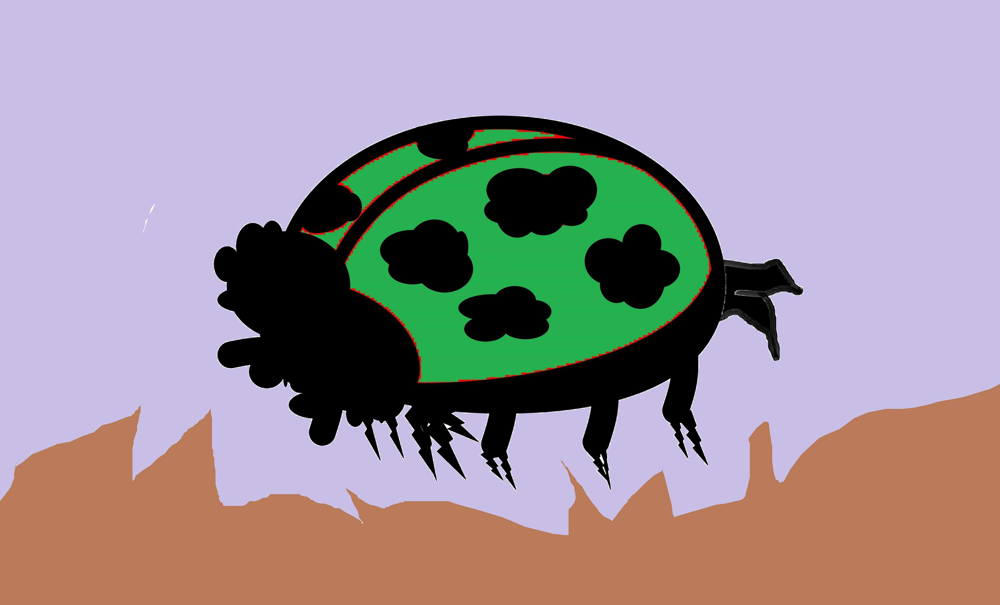
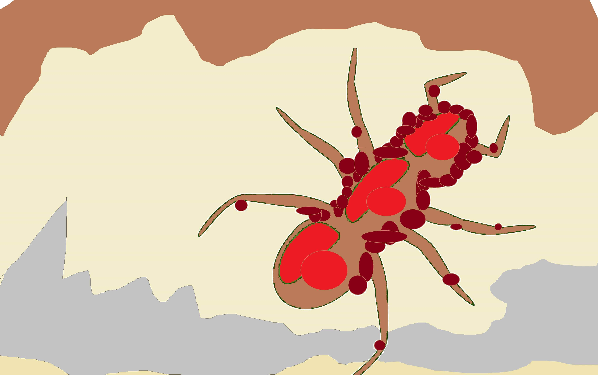
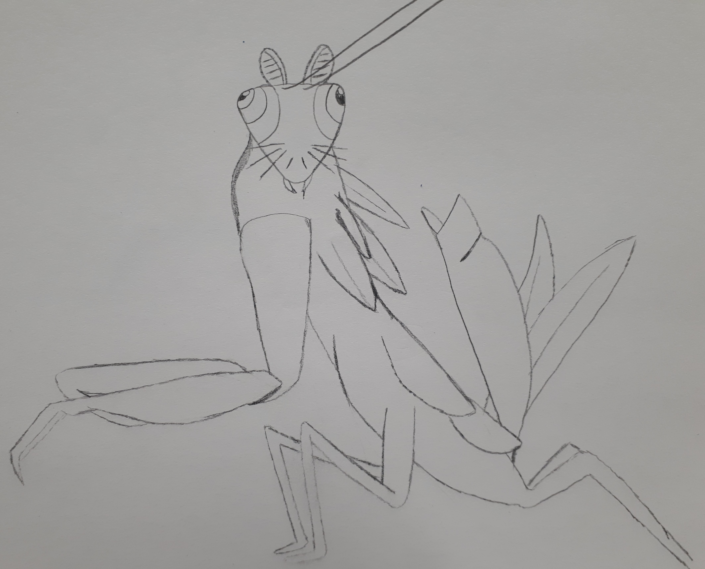

Green Crested Ladybug

These bugs are not carnivorous but instead eat the leaves of plants and flowers.
They have predators, being the spider, and often live in groups.
They reproduce by laying eggs in the soil near the plants around the fall time. Within two weeks, the eggs hatch and the baby insects crawl their way up to the top of the plants to join their parents, eating away at the stems as they go.
Although parasitic to most plants, as they’re eating away at them, they also benefit the soil around them. As they eat, particles of plants fall around and disintegrate into the soil resulting in a nice fertilizer.
These bugs are also asexual and do not mate to reproduce.
Whiskered Spider-Bug

These bugs are found near the water, either by ponds or creeks.
They have six legs that help them glide across the water and four other hind legs to help them sense any danger near their surroundings. These bugs do not mate but instead reproduce by laying their eggs in small pouches and letting them sink to the bottom of the lake, where the heat of the water lets the eggs incubate.
The eggs then hatch, and the larvae swim up to the surface where they develop on the surface of the water.
These bugs eat algae and thrive off of the bacteria that is in the water.
They have no major predators although they will sometimes fall victim to small lizards and reptiles.
Spotted Zit Ant

These bugs are often found on the surface of the trees. They get their name from their appearance, the red spots on their bodies accompanied by little smaller bumps all along their legs and torso.
They have pincers to help them grasp and eat other small bugs.
These bugs make their homes inside the bark and, although harmless to humans, are often parasitic to the trees.
Their numbers have been increasing in the past few years and as their size grows, the number of affected trees has also gone up.
These bugs live in clusters and often lay eggs every spring, before they hatch in the summer.
They are asexual and do not require a mate to reproduce.
Flying Mantis

The "Fluder" or Flying Mantis as it's more commonly referred to as is a great display of the wonders of nature. Bearing four small wings on its back, the Flying Mantis
will spend their day flying up to tall trees to seek out they're favourite prey, the whiskered spider bug.